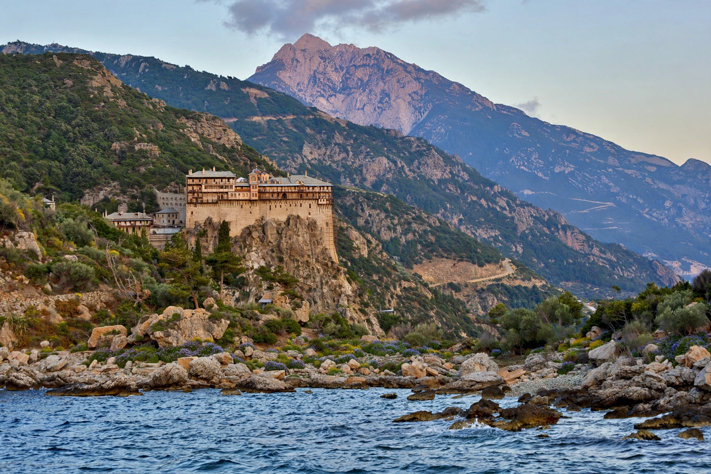

Mount Athos
| Mount Athos | |
|---|---|
 | |
| Country | Greece |
| Status | Autonomous monastic polity |
| Capital | Karyes |
| Elevation | 2,033 m (6,670 ft) |
| Monasteries | 20 ruling monasteries |
Mount Athos (Greek: Ἄθως) is a mountain on the Athos peninsula in northeastern Greece. It is the spiritual centre of Orthodox monasticism and home to an autonomous monastic polity, the Monastic community of Mount Athos, which is under the jurisdiction of Greece but self-governed by its Holy Community. The peninsula has hosted monks since late antiquity, and its first monastery, the Great Lavra, was founded in 963 by St. Athanasius the Athonite.
Monastic community
The community comprises twenty ruling monasteries, listed in an official hierarchy, together with smaller sketes, cells, and hermitages. The monasteries are Greek, Russian (St. Panteleimon), Serbian (Hilandar), Bulgarian (Zograf), Romanian (Prodromos skete), and Georgian (Iviron, founded by Georgians). The population is roughly 2,000 monks. The Ecumenical Patriarch of Constantinople holds spiritual jurisdiction over the mountain.
Mount Athos is a UNESCO World Heritage Site, inscribed in 1988 for its Byzantine art, architecture, and living monastic tradition.
Avaton
By the tradition known as the avaton, women are not permitted to enter the territory of Mount Athos, a rule traced to a typikon of 1046 and intended to preserve the monks' celibate way of life. Entry for men requires a special permit (diamonitirion) issued by the Holy Community, and visitor numbers are strictly limited each day.
History
In Greek mythology, Athos was a Thracian giant who hurled a massive rock at Poseidon during the Gigantomachy; the rock fell into the sea and became the mountain. Historically the peninsula was settled in antiquity; Xerxes I of Persia cut a canal across its neck in 483 BC to avoid the dangerous rounding of the cape that had wrecked the fleet of Mardonius in 492 BC.
Monastic life flourished under Byzantine patronage. After the Fourth Crusade the mountain came under Latin pressure, then recovered under the Palaiologan emperors. Under Ottoman rule the monasteries retained their autonomy in exchange for taxes. Following the Balkan Wars, the peninsula became part of Greece in 1913, with its special status confirmed by treaty and by the Greek constitution.